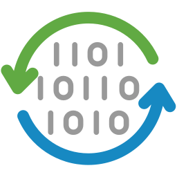

Opérations sur les signaux#
Cette section décrit les opérations qui peuvent être effectuées sur les signaux.
Voir aussi
Traitement des signaux pour plus d’informations sur les fonctionnalités de traitement des signaux, ou Calculs sur les signaux pour des informations sur les fonctionnalités de calcul sur les signaux.

Capture d’écran du menu « Opérations ».#
Lorsque le « Panneau Signal » est sélectionné, les menus et barres d’outils sont mis à jour pour fournir les actions liées aux signaux.
Le menu « Opérations » permet d’effectuer diverses opérations sur les signaux sélectionnés, telles que des opérations arithmétiques, la détection de pics, ou encore la convolution.
Opérations arithmétiques de base#
Opération |
Description |
|---|---|
|
\(y_{M} = \sum_{k=0}^{M-1}{y_{k}}\) |
Moyenne |
\(y_{M} = \dfrac{1}{M}\sum_{k=0}^{M-1}{y_{k}}\) |
|
\(y_{2} = y_{1} - y_{0}\) |
|
\(y_{M} = \prod_{k=0}^{M-1}{y_{k}}\) |
|
\(y_{2} = \dfrac{y_{1}}{y_{0}}\) |
 Somme
Somme Différence
Différence Produit
Produit Division
DivisionOpérations avec une constante#
Crée un signal à partir d’une opération avec une constante sur chaque signal sélectionné :
Opération |
Description |
|---|---|
|
\(y_{k} = y_{k-1} + c\) |
|
\(y_{k} = y_{k-1} - c\) |
|
\(y_{k} = y_{k-1} \times c\) |
|
\(y_{k} = \dfrac{y_{k-1}}{c}\) |
 Addition
Addition Soustraction
Soustraction Multiplication
Multiplication Division
DivisionParties réelle et imaginaire#
Opération |
Description |
|---|---|
|
\(y_{k} = |y_{k-1}|\) |
|
\(y_{k} = \Re(y_{k-1})\) |
Partie imaginaire |
\(y_{k} = \Im(y_{k-1})\) |
 Valeur absolue
Valeur absolue Partie réelle
Partie réelleConversion du type de données#
L’action « Convertir le type de données »  permet de convertir le type de données des signaux sélectionnés.
Note
La conversion du type de données utilise la fonction numpy.ndarray.astype() avec les paramètres par défaut (casting=”unsafe”).
Fonctions mathématiques de base#
Fonction |
Description |
|---|---|
|
\(y_{k} = \exp(y_{k-1})\) |
|
\(y_{k} = \log_{10}(y_{k-1})\) |
|
\(y_{k} = y_{k-1}^{n}\) |
|
\(y_{k} = \sqrt{y_{k-1}}\) |
 Exponentielle
Exponentielle Logarithme (base 10)
Logarithme (base 10) Puissance
Puissance Racine carrée
Racine carréeAutres opérations mathématiques#
Opération |
Implémentation |
|---|---|
|
Basé sur numpy.gradient |
|
Basé sur scipy.integrate.cumulative_trapezoid |
|
Basé sur scipy.signal.convolve |
 Dérivée
Dérivée Intégrale
Intégrale Convolution
Convolution